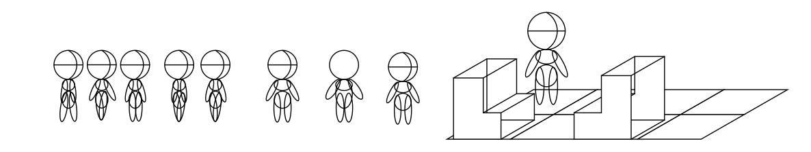

Day 1
22 / 06 / 2020
It has begun! Day one has not been as productive as I would have liked. In fact I mostly forgot about the jam and only signed up this evening, getting my ticket and joining the jam's discord. Distractions mainly due to a friend in need needing a bit of company so can't be disappointed in myself for that.
The project is an idea I've had for a while, less a game and more a relaxing experience with heavy inspiration from Animal Crossing. There's going to be a lot of focus on the art assets as I still need to properly learn Godot for game development so this will be an HTML based project. As it needs to be downloadable I'll use Electron to package it as a standalone app. A couple of people doing the jam have offered to create music for the project which will be a huge help in creating the atmosphere I want.
As it stands I'd like to keep the full idea and scope under wraps and concentrate on sharing what I've actually worked on.
Today has been mainly the admin of signing up and sketching things down with paper and pencil. I started on vector work to get a base character model and an idea of thr perspective I want. Originally the view was going to be from street level but raising that up allows more to be visible and ultimately for more to be packed into the available space. This is important as it's only planned to be on a single screen at the moment.
Tomorrow I'll try to get a basic demo with a little bit of animation up and running. Once I see stuff moving I think the motivation will pick up.